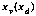
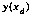
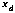
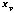
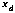
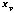
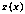
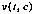
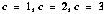
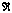

Table of Contents
Table of Contents
 Previous Chapter
Previous Chapter
Table of Contents
Previous Chapter
The N-space DataChunk class (class ID DCC_NSpace), subclassed from DCC_MetData, stores general-purpose, N-dimensional, floating-point, regularly- or irregularly-spaced meteorological data which do not fit existing DataChunk class organizations. It fills a gap between the scalar class and the gridded classes: scalar-class data are limited to a single temporal dimension, while the dimensions of gridded-class data are restricted to physical coordinate systems. N-space fields can be defined as time-dependent or time-independent, over zero dimensions or over several dimensions. The N-space class is flexible enough to define several organizations of data, including irregularly-spaced data, and allow fields of different organizations to be combined within the same DataChunk.
On a fundamental level, the N-space class is analogous to the netCDF data model. The class can serve as a vehicle for passing general data through the DataChunk interface to the netCDF interface and netCDF-format files. The N-space interface makes use of many of the requirements and conventions of the netCDF interface, including the use of coordinate variables (also referred to here as dimension variables) to describe irregularly-indexed arrays of data. Coordinate variables are explained in Section 6.1.2. Also, see the NetCDF User's Guide(1) for details on the netCDF interface.
Since the N-space class is designed to take advantage of the flexibility of the netCDF interface, the netCDF file format is the only format for which Zebra supports the storage and retrieval of N-space DataChunks. The current support is limited to scalar and nspace organizations, but support for other organizations is possible.
Note that Section 6.4, "Examples", contains several examples of N-space code which may be helpful references while reading the first few sections of the chapter. Feel free to suggest other examples which would help clarify any of the information.
Release 4.1 includes some new flexibility for manipulating N-space datachunks. Originally, variables and dimensions could be redefined while the definition was still open and no data had been added, but a redefinition always produced a warning in the event logger. The new function dc_NSAllowRedefine() allows redefinitions to be explicitly allowed rather than always causing warnings. For backwards compatibility, N-space datachunks default to the historical behavior of warning about redefinitions. See the new section, Section 6.2.4, "Redefinition", for more information.
Release 4.0 of Zebra includes some additions and enhancements to the N-space interface. First of all, there is a new function dc_NSAddMultSamples(), which allows multiple samples of a single field to be added in one function call. This function is analogous to the MetData class's dc_AddMData() function.
The dc_NSGetSample() function is no longer restricted to retrieving dynamic data. If data for a static field is requested, dc_NSGetSample() ignores the sample number parameter and returns the static data. This makes sense because static data is by definition constant across all of the samples in the DataChunk, and therefore it can be returned as valid data for any sample number. The opposite is not true; static data cannot be added through the dc_NSAddSample() function.
The interface sections below, Section 6.2.6, "Adding Data" and Section 6.2.7, "Extracting Data", describe both of the changes above in more detail and include the function prototypes.
This section describes three concepts which are unique to the N-space DataChunk class: dimensions, coordinate variables, and static fields.
Like its parent class, DCC_MetData, the N-space class organizes DataChunks as a collection of fields, each distinguished by their unique FieldId. For the N-space class, the words `field' and `variable' will be used interchangeably, and in general the words refer to the same concept. In addition to fields, the N-space class adds the notion of dimensions. Two required pieces of information describe a dimension: the name and the size. The dimension's name uniquely identifies itself among the other dimensions in a DataChunk and serves as a reference when defining fields or inquiring about the dimensions in a DataChunk. The dimension's size is simply the number of coordinates (i.e., indices) in the dimension. The N-space interface allows dimensions to be specified either by name or by FieldId. When specified by FieldId, the field name associated with the FieldId becomes the name of the dimension. The ability to specify dimensions by FieldId can simplify situations where one field or a group of fields will serve to irregularly index several other fields [see Section 6.1.2 on coordinate variables].
An N-space field differs from MetData fields in that N-space fields are defined over a list of dimensions and can be either static or dynamic. The interface for defining fields and dimensions is explained in Section 6.2.3. Section 6.1.3 explains static fields.
To define irregularly-spaced data, the netCDF data model and the N-space interface rely on the notion of coordinate variables. A coordinate variable is a mapping whose range maps the domain of another variable. Hence the coordinate variable maps the irregularly-spaced points along a dimension, while a variable defined over that same dimension maps its range values corresponding to the points mapped by the coordinate variable. The convention used by netCDF and adopted by the N-space interface identifies a coordinate variable as a variable whose name is identical to the name of a dimension. For example, consider a variable named x which maps the dimension x into the domain of a variable y, yielding two mappings  and , where  is the variable x and  is the dimension x. Note that there is a distinction between x the variable and x the dimension. The N-space interface makes this distinction by clearly separating the definition of a variable from the definition of a dimension. In this case, 
is the coordinate variable. A set of data points for the irregularly-spaced variable y such as
is the variable x and  is the dimension x. Note that there is a distinction between x the variable and x the dimension. The N-space interface makes this distinction by clearly separating the definition of a variable from the definition of a dimension. In this case, 
is the coordinate variable. A set of data points for the irregularly-spaced variable y such as
would be described by the following field data in an N-space DataChunk (x is the variable ):
and
If the domain of another variable, z, was also mapped by x, then the field would be defined as  in the DataChunk. The values of z would be the values of at each of the points mapped by x.
The N-space interface does not explicitly define a coordinate variable. The interpretation of a field as a coordinate variable is implicit in the naming convention described above. A dimension does not need to have a corresponding variable of the same name. A dimension without a coordinate variable simply represents a regularly-spaced domain containing the indices, 1, 2, 3, n, where n is the size of the dimension. A field dimensioned over such a domain maps the indices of the dimension to the field's values at specific coordinates along the dimension. Coordinate variables are purely a method of attaching auxiliary and optional information to a dimension, such as an explicit mapping of the values in a field's domain or a physical significance of the field's dimension. For example, a vector in 3-space dimensioned over time might be defined as . Time is the dimension t, while c is the component dimension of size 3. The values of the x, y, z and components of v would be stored at the coordinates  , respectively, for each time coordinate along dimension t. In this example, a coordinate variable for dimension c is not only unnecessary but unreasonable as well.
Occasionally it may be desirable to store a field or coordinate variable whose data do not vary with time. Rather than store the same data repeatedly for each time sample in a DataChunk and waste space, the N-space class allows the definition of static fields. A static field is not associated with a particular time or sample number, and its data only needs to be added to the DataChunk once.
Any N-space field, regardless of the number of dimensions or whether it is a coordinate variable, can be defined as static. A field which is not static stores data according to specific times and sample numbers, as in the MetData interface.
This section provides general guidelines for using the N-Space interface, as well as descriptions of the specific interface functions, their prototypes, and their uses.
The N-space interface divides the construction of an N-space DataChunk into two steps: first, the definition of dimensions and fields; and second, the addition of the data. The definition must be completed before any data can be added.
Dimensions can be defined in two ways: individually by specifying a FieldId and a size, or in arrays of names and sizes passed to a field definition. The two methods differ primarily in that the use of a FieldId to specify a dimension can make the definition of coordinate variables more convenient. Since FieldIds are unique, a dimension and a field with identical FieldIds are guaranteed to have the same name, and hence by convention the field can be interpreted as a coordinate variable. Also, when defining many fields and dimensions in a single DataChunk, FieldIds may be easier to manipulate.
In either approach to defining dimensions, when defining a field the dimensions of the field are listed in an array, either an array of FieldIds or an array of names. The order of the dimensions in the array corresponds to the order of the arguments in the `function mapping' of the field, as in
where f is a field defined over four dimensions, A, B, C, and D, whose range is the set of real numbers,  . To store the multi-dimensional array of field values in linear memory, the N-space interface requires that arrays be in row-major order---the coordinate for dimension d varying fastest in memory, followed by dimension c, and so on:
The use of row-major order complies with the netCDF C interface specification. All field data will be stored and retrieved in row-major order, as a linear array of floating point values. The N-space interface itself cannot verify that it receives data in the correct order. Improper ordering of a data array can be detected by visual inspection of the netCDF file which stores the data.
Once all dimensions and fields have been defined, the definition must be marked completed. This happens automatically when adding data to any of the fields for the first time. Definition can also be forced to completion by calling dc_NSDefineComplete(). Once definition is complete, it cannot be re-opened. Section 6.2.3 describes the functions available for defining dimensions and fields. Section 6.2.6 describes the functions available for adding data.
There are two categories of functions for retrieving information from an N-space DataChunk: inquiries about the available dimensions and fields, and retrieval of actual field data. Section 6.2.5 explains how to get information about the dimensions and fields in a DataChunk, and Section 6.2.6 explains how to retrieve field data.
Numerical and Boolean parameters, except for the size of a dimension, are always type int. Dimension sizes and lengths of data arrays are always type unsigned long. The `length' of a data array or `size' of a field is the number of floating point elements in the array or in the range of the field, respectively, not the number of bytes occupied by the data. For information retrieval, character strings are returned as pointers to memory inside the DataChunk. The memory containing the strings will be valid for the lifetime of the DataChunk, but it should not be freed or modified. Any parameters passed by reference to hold return values can be passed as NULL, in which case nothing will be returned for that parameter. Lastly, all of the N-space interface functions have a prefix of "dc_NS".
Interface functions from the N-space parent class, MetData, can also be useful, but only for retrieving information and data, and only once definition has been completed. Following are some potentially useful MetData class functions:
The N-space class inherits all of the attribute capabilities of the MetData class, including per-field and per-sample attributes. Of course, per-sample attributes are meaningless for static fields.
The header file DataStore.h contains some parameters and declarations required by the N-space interface. First of all, it contains prototypes for all of the functions in the N-space interface. It also contains comments outlining the general use of the N-space interface. Three C pre-processor symbols defined in DataStore.h are used by the N-space class: DC_MaxField, DC_MaxDimension, and DC_MaxDimName. DC_MaxField is the maximum number of fields which can be defined in a DataChunk. Likewise, DC_MaxDimension is the maximum number of dimensions which can be defined in a DataChunk. The DC_MaxDimName parameter is the maximum size of a dimension name, including the NULL terminator. Dimension names longer than the DC_MaxDimName length are truncated, as described in Section 6.2.3. Any attempts to breach the DC_MaxDimension or DC_MaxField limits in an N-space DataChunk results in error messages to the event logger.
All of the definition functions have the prefix dc_NSDefine.
The dc_NSDefineField() function defines a field and its dimensions simultaneously:
void dc_NSDefineField(dc, field, ndims, dimnames, dimsizes, is_static) DataChunk *dc; FieldId field; int ndims; char **dimnames; unsigned long *dimsizes; int is_static;
The FieldId of the field is passed in field. The number of dimensions in this field is given in ndims, while dimnames and dimsizes are arrays which provide a name and size for each dimension. The field will be defined as static if and only if the flag is_static is non-zero. The dimension names and sizes will be copied into the DataChunk, so the memory occupied by dimnames and dimsizes does not need to be valid beyond the call to the function. If a dimension named in dimnames does not exist, it is defined and given the corresponding size from dimsizes. If a named dimension does exist in the DataChunk, it will be verified with the previous definition. A disagreement in size will produce a warning and a re-definition of the dimension to the new size.[See dc_NSAllowRedefine() in Section 6.2.4.] It is acceptable to define a field with zero dimensions. A dynamic field with zero dimensions is essentially identical to a DCC_Scalar field, while a static field with zero dimensions will hold a single floating point value in the DataChunk.
The dc_NSDefineField() function is the simpler method of defining a field, intended for fields whose dimensions will not be indexed by other fields in the DataChunk. As stated in Section 6.1.1, dimension names must be unique since they are used to distinguish the dimensions in a DataChunk, no matter whether the dimension is defined by name through dc_NSDefineField() or by FieldId through dc_NSDefineDimension() (described below). It is not possible to define two dimensions with identical names and different sizes. Each definition of a dimension's size overrides any previous definitions. A field whose name matches a dimension name is assumed to be a coordinate variable (see Section 6.1.2). When intentionally defining a coordinate variable with dc_NSDefineField(), note that errors such as misspelled dimension names cannot be caught by the interface. The functions dc_NSDefineDimension() and dc_NSDefineVariable() provide a more rigorous approach to defining indirectly-indexed field data.
Use dc_NSDefineDimension() to explicitly define a single dimension using the FieldId mechanism:
void dc_NSDefineDimension(dc, dimn, size) DataChunk *dc; FieldId dimn; unsigned long size;
The dimension's FieldId is taken from dimn, while size is the size of the dimension. The name associated with the FieldId dimn is used as the name of the dimension. Any dimension defined with a FieldId can be referenced either by its name or by its FieldId. Ordinarily, dimensions defined with dc_NSDefineDimension() are used in defining a field with dc_NSDefineVariable() (described below). The N-space class interprets any field defined with the same FieldId as a dimension as a coordinate variable. [See Section 6.3 for exceptions in netCDF files.] The dimension name is still checked for uniqueness among other dimensions, even if the FieldId is unique. If a dimension of the same name has already been defined, then the most recent definition, including the FieldId and size, will override the existing definition.
The dc_NSDefineVariable() function adds a field to an N-space DataChunk:
void dc_NSDefineVariable(dc, field, ndims, dims, is_static) DataChunk *dc; FieldId field; int ndims; FieldId *dims; int is_static;
The field is identified by the FieldId field. The field will be defined over ndims dimensions, where each FieldId in the array dims corresponds to the FieldId of a dimension defined previously with dc_NSDefineDimension(). If is_static is non-zero, the field will be defined as static---it will not be implicitly defined over time, meaning data for this field will be stored independent of sample numbers and sample times (see Section 6.1.3). The is_static flag is primarily intended for coordinate variables whose mappings do not change over the period of samples stored in the DataChunk. As mentioned with dc_NSDefineField(), it is acceptable to define a variable with zero dimensions. Previous definitions of a variable with the same FieldId will be overridden by the most recent definition.
The N-space definition interface contains two functions dealing with the state of a DataChunk's definition:
void dc_NSDefineComplete (dc) DataChunk *dc;
and
int dc_NSDefineIsComplete (dc) DataChunk *dc;
The first function, dc_NSDefineComplete(), marks the definition of the DataChunk as completed. Closing the definition blocks any further definition changes or additions, defines the N-space fields to the parent class, MetData, and calculates the sizes of each of the fields from the sizes of their dimensions. If definition is already closed, dc_NSDefineComplete() does nothing. Definition is automatically completed whenever data are first added to the DataChunk; the dc_NSDefineComplete() function is provided to allow important calculations to be forced before dumping a DataChunk with dc_DumpDC(), without requiring the addition of any data. Once the definition is marked completed, it cannot be re-opened.
To test whether the definition of a DataChunk is open or closed, use the function dc_NSDefineIsComplete(), which returns a non-zero value if and only if the definition is complete (closed).
While a datachunk's definition is still open, applications can call dc_NSAllowRedefine() to set whether redefinitions should produce warning messages or be silently accepted.
void dc_NSAllowRedefine(dc, allow) DataChunk *dc; int allow;
The allow parameter is a Boolean value. If non-zero, redefinitions will be silently accepted for the given datachunk. If zero, the datachunk resets to the default behavior of warning about all redefinitions. Once the datachunk definition has been closed, calls to dc_NSAllowRedefine() have no effect.
Changing the redefinition behavior can be useful when defining `placeholder' dimensions or variables whose sizes will not be known until a program completes other calculations. Warnings can be turned on and off depending upon where and when redefinitions must be allowed, so that unintended or accidental redefinitions can still be easily detected and debugged.
The inquiry functions retrieve the information which is defined through the definition functions. All of the inquiry functions return type int. For some functions, this return value is either the number of fields or dimensions found. For other functions, the return value is a result code. A non-zero result code indicates success; result codes of zero indicate failure.
The function dc_NSGetAllDimensions() returns all available information for each of the dimensions defined in an N-space DataChunk.
int dc_NSGetAllDimensions(dc, names, dimn_ids, sizes) DataChunk *dc; char **names; FieldId *dimn_ids; unsigned long *sizes;
It returns the number of dimensions contained in the DataChunk as its return value. If dimn_ids is non-NULL, the function also copies the FieldId of each dimension into the array of FieldIds pointed to by dimn_ids. Only those dimensions defined through dc_NSDefineDimension() will have a valid FieldId, all other elements of dimn_ids will be set to BadField. If sizes is non-NULL, the array of unsigned longs pointed to by sizes holds the size of each dimension. If names is non-NULL, a pointer to each dimension name is assigned to each element of names. The memory referenced by the elements of names is guaranteed to be valid as long as the DataChunk exists. This memory must not be freed or modified. Dimensions are listed in the names, dimn_ids, and sizes arrays in the order in which they were defined. Adequate space for the dimn_ids, names, and sizes arrays can be defined with
char *names[ DC_MaxDimension ]; FieldId dimn_ids[ DC_MaxDimension ]; unsigned long sizes[ DC_MaxDimension ];
The function dc_NSGetAllVariables() retrieves lists of all of the fields in a DataChunk and the number of dimensions in each field.
int dc_NSGetAllVariables(dc, fields, ndims) DataChunk *dc; FieldId *fields; int *ndims;
The return value of the function is the number of variables in the DataChunk. If fields is non-NULL, its elements return the FieldId of each variable in the DataChunk. If ndims is non-NULL, the elements of ndims return the number of dimensions in each variable. The function lists the variables in the order in which they were defined. To ensure adequate space for returned values, the following definitions may be used for the fields and ndims arrays:
FieldId fields[ DC_MaxField ]; int ndims[ DC_MaxField ];
The information retrieval counterpart to dc_NSDefineField() is dc_NSGetField():
int dc_NSGetField (dc, field, ndims, names, sizes, is_static) DataChunk *dc; FieldId field; int *ndims; char **names; unsigned long *sizes; int *is_static;
For the specified DataChunk dc and the field with FieldId field, dc_NSGetField() returns that field's number of dimensions, the name and size of each dimension, and a flag indicating whether the field is static. If any of the reference parameters are NULL, no value will be returned in that parameter. The return value of the function is non-zero if and only if no errors occur during the inquiry. When names is non-NULL, the elements of the names array point to the names of each of the field's dimensions. Likewise, sizes holds the corresponding size of each dimension. The integer *is_static returns non-zero if the field is static. The following definitions suggest one possibility for defining adequate space for the returned information:
char *names[ DC_MaxDimension ]; unsigned long sizes[ DC_MaxDimension ];
The information retrieval counterpart to dc_NSDefineDimension() is the function dc_NSGetDimension():
int dc_NSGetDimension (dc, dimn, name, size) DataChunk *dc; FieldId dimn; char **name; unsigned long *size;
This function returns information about the dimension identified by the FieldId dimn. The search for the dimension explicitly uses the value of dimn rather than the name associated with the FieldId. Hence this function is only useful for dimensions which were defined with dc_NSDefineDimension(). No values are returned for NULL reference parameters. The address of the dimension name is returned in *name. The memory occupied by the name exists until the datachunk is destroyed; do not try to free it as it belongs to the datachunk. The size of the dimension is returned in *size. The return value of the function is non-zero on success, zero otherwise.
The function dc_NSGetVariable() is the information retrieval counterpart to the function dc_NSDefineVariable():
int dc_NSGetVariable (dc, field, ndims, dims, is_static) DataChunk *dc; FieldId field; int *ndims;*ndims*ndims FieldId *dims; int *is_static;
If ndims is non-NULL, this function returns the number of dimensions in the variable in *ndims. If dims is non-NULL, then it must point to an array of length *ndims. Each element of dims will be set to the FieldId of each of the dimensions over which the variable is defined. If a dimension of the variable was not defined with dc_NSDefineDimension(), that dimension's returned FieldId will be BadField. If the variable is static, *is_static will be non-zero. Once the FieldIds of the variable's dimensions are known, specifics about each dimension can be obtained with dc_NSGetDimension(), assuming the dimensions were assigned a FieldId via dc_NSDefineDimension(). Information for dimensions whose FieldId is BadField will have to be retrieved through dc_NSGetField() or dc_NSGetAllDimensions(). The return value of the function is non-zero on success, zero otherwise.
The dc_NSIsStatic() function provides a simple test for determining whether a field is static or dynamic.
int dc_NSIsStatic (dc, field) DataChunk *dc; FieldId field;
The return value is non-zero if and only if the field specified by FieldId field is static.
To add a sample of dynamic field data to an N-space DataChunk, use
void dc_NSAddSample(dc, when, sample, field, values) DataChunk *dc; ZebTime *when; int sample; FieldId field; void *values;
This function stores the array of floating point values in the specified sample, associated with time when and variable field. The length of the values array equals the size of the field---the product of the sizes of the dimensions over which the variable was defined. The array should be in row-major order---the last dimension (the one defined at the highest index into the dims array or the dimnames array) varies the fastest in linear memory (see Section 6.2.1). The variable must have been defined as dynamic, else an error occurs. If this is the first attempt to add data to the DataChunk, dc_NSAddSample() will complete the definition and flag it as closed before adding the data.
Multiple samples of data for a single field can be added with the function dc_NSAddMultSamples():
void dc_NSAddMultSamples(dc, when, begin, nsample, field, values) DataChunk *dc; ZebTime *when; /* an array of times, one per sample */ int begin; /* starting sample index */ int nsample; /* number of samples to add */ FieldId field; void *values;
As in dc_NSAddSample(), dc is the N-space datachunk and field is the FieldId of the field begin stored. The first sample number to store is given in begin, and nsample holds the number of samples to store. The when and values arrays must hold times and data values, respectively, for nsample numbers of samples.
To add static field data to an N-space DataChunk, use
void dc_NSAddStatic (dc, field, values) DataChunk *dc; FieldId field; void *values;
This function is similar to dc_NSAddSample() with the exception that no time or sample number is associated with the field's data. The field must have been defined as static, else an error occurs. As with dc_NSAddSample(), the values array should be in row-major order. Each successive call to dc_NSAddStatic() overwrites any data previously stored for the given field. Static data will be added directly to the raw data chunk since it is not associated with any particular sample, hence it cannot be retrieved through any of the MetData class methods. Note that static fields are lumped into the fields definition for the MetData class structure (see definition completion in Section 6.2.1), but no data are ever stored for the fields via dc_AddMData().
To get a pointer to a sample of field data, use
void * dc_NSGetSample(dc, sample, field, size) DataChunk *dc; int sample; FieldId field; unsigned long *size;
The function returns a pointer to the data for field at sample number sample. If size is non-NULL, *size returns the length of the data array as the number of floating point elements in the array. The array is in row-major order, exactly as it was stored. If the data for the specified field or sample cannot found, the function returns NULL.
The field parameter may be a static field, in which case the function ignores the sample number and returns that field's static data. By definition, static data are valid and constant across all of the samples in the DataChunk, so it makes sense to return the same static data for any sample in the DataChunk. As long as the sample number sample exists in the DataChunk and data for the static field have been stored in the DataChunk, dc_NSGetSample() will return those data regardless of the sample number. If there are no data for that field, or the sample number is out of range, dc_NSGetSample() reports an error and returns NULL.
Note that there is no analogous capability in dc_NSAddSample(). Too many ambiguities can arise about which static data should take precedence for which samples, and whether static data can be added for a sample which does not contain any dynamic data. More importantly, when static data is being added, it is essentially being added for the entire DataChunk and not for a single sample. Requiring the use of dc_NSAddStatic() to add static field data makes this distinction very clear.
To get a pointer to a field's static data in an N-space DataChunk, use
void * dc_NSGetStatic (dc, field, size) DataChunk *dc; FieldId field; unsigned long *size;
Basically, this function is exactly like dc_NSGetSample(), except no sample number is necessary and the field with FieldId field must be static rather than dynamic.
This section gives information which might be helpful when using Nspace DataChunks to store data in netCDF files.
Dimensions in the N-space DataChunk will be defined as dimensions in the netCDF file using the N-space name and the corresponding size. Static fields will be defined as netCDF variables over their given N-space dimensions, while dynamic fields will be defined over a temporal dimension as well as the N-space dimensions. If a FieldId is defined as both a dimension and a variable in the DataChunk, then a variable will automatically be defined in the netCDF file with the same name as a netCDF dimension. Hence, by netCDF convention, the variable will be a coordinate variable, implying that it maps the irregularly-spaced domain of any variables defined over the coordinate variable's dimension. The naming scheme for coordinate variables is only a convention. It is up to the application using the netCDF file to look for possible coordinate variables and handle them appropriately.
The N-space class limits the number of dimensions in a DCC_NSpace variable to DC_MaxDimension, which ideally is less than the netCDF maximum, MAX_NC_DIMS. Note that the N-space limit does not include the temporal dimension, which for MetData subclasses is implicit in the organization of data by samples. Therefore dynamic variables normally should be limited to one dimension less than the netCDF maximum for storage in netCDF files. MAX_NC_DIMS is defined in the netCDF header file, netcdf.h, and DC_MaxDimension is defined in DataStore.h. See Section 6.2.2 for the Nspace header file definitions.
Dimension names must be limited in length to DC_MaxDimName bytes (including the NULL terminator), which is reasonable since there is a similar limit to dimension names in netCDF files. However, if a dimension is defined with a name that is too long, either through dc_NSDefineField() or dc_NSDefineDimension(), then the name will be truncated. If the dimension name was meant to match the name of a coordinate variable, then the convention may be lost in the netCDF file as the truncated dimension name may be different from the variable name.
With the N-space interface, it is now possible to store the same fields in more than one netCDF file using differently sized dimensions, or even different numbers of dimensions, by changing the definition of the N-space DataChunk for each data file. This can be hazardous to Zebra if a data fetch spanning more than one file must read the same field but different dimensions from the files. At present, nothing in Zebra attempts to detect a change in the shape of a field between files. As long as fetches are performed on the observation level, where an observation in Zebra corresponds to a single file, shape changes between files should not be a problem.
There is another shortcoming in Zebra's handling of N-space data. At present, Zebra applications expect all data files to contain time-dependent data. In other words, an application expects to find an array of sample times in every file. For this reason, it is not a good idea to store N-space DataChunks which contain only static fields. There needs to be at least one non-static field from which to generate the sample times for the file.
This section includes several examples of code which use the N-space interface. All of the examples also include CDL (network Common Data form Language) descriptions of the netCDF file structure generated by the sample code. Most of the examples concentrate on establishing the structure and shape of the dataset; once the definition is complete the addition of data is straightforward.
The first example of the N-space interface defines a single, dynamic field over a single dimension. In effect this creates a time-varying vector, where the number of components in the vector equals the size of the dimension. The vector is an array of virtual temperatures measured at 50 levels of an atmospheric profile.
DataChunk *dc;
char *dim_names[] = { "levels" };
unsigned long dim_sizes[] = { 50 };
FieldId vfld;
dc = dc_CreateDC (DCC_NSpace);
dc->dc_Platform = ds_LookupPlatform ("profiler");
dc_SetBadval (dc, BADVAL);
vfld = F_DeclareField ("virtual","Virtual temperature", "K");
/*
* Define a dynamic field, dimensioned on "levels"
*/
dc_NSDefineField (dc, vlfd, 1, dim_names, dim_sizes, FALSE);
The code above produces a netCDF structure like the following:
netcdf example { // a single dynamic field with 1 non-temporal dimn
dimensions:
time = unlimited;
levels = 50;
variables:
float virtual(time,levels);
virtual:long_name = "Virtual temperature";
virtual:units = "K";
}
Note that the time dimension defined in the netCDF file was not defined in the N-space call to dc_NSDefineField(). The temporal dimension is implied by specifying the is_static parameter as FALSE. For each time coordinate, or sample, in the file, this dataset holds 50 temperatures---one for each coordinate along the levels dimension.
In the previous example, no physical significance was attached to the levels dimension. There is no information about the location or meaning of each of the coordinates along the levels dimension. The virtual temperature values are simply accessed directly through the indices 1, 2, …, 50. However, since the domain of the virtual temperature vector has a physical basis---a series of heights above ground level---this relationship should be communicated through the definition of the data. A coordinate variable [Section 6.1.2] supplies the link between the locations of the virtual temperature readings and the temperature values. Since there are 50 levels in the profile, both the array of temperatures and the array of heights will have 50 components in the non-temporal dimension. To explicitly show the link between the heights and the domain of the virtual field, the height values are stored in a field whose name is the same as the dimension used to index the virtual temperature heights. In the Nspace interface, the two fields are defined as usual, both over the same dimension. The only significance to the definition is that one of the fields has the same name as its dimension. Also, the dimension name has been changed from "levels" to "height", since "height" is more descriptive. It might be helpful to think of dimensions as coordinates rather than as arrays of indices or simply lengths and sizes. In actuality dimensions represent coordinates. A mapping over 3-space has dimensions x, y, and z, as opposed to having the dimensions "Xs", "Ys", and "Zs". The fact that a size must be assigned to a dimension confuses the fact that the dimension is more than just a count. The assignment of a size is necessary to specify how many coordinates will be stored in a dataset along a dimension, but the dimension name should still be a dimension rather than a counting variable. Hence this example uses "height" rather than "levels" or "heights". The code looks like this:
DataChunk *dc;
char *dim_names[] = { "height" };
unsigned long dim_sizes[] = { 50 };
FieldId vfld, hfld;
dc = dc_CreateDC (DCC_NSpace);
dc->dc_Platform = ds_LookupPlatform ("profiler");
dc_SetBadval (dc, BADVAL);
vfld = F_DeclareField ("virtual", "Virtual temperature", "K");
hfld = F_DeclareField ("height", "Height above ground", "km");
dc_NSDefineField (dc, vlfd, 1, dim_names, dim_sizes, FALSE);
dc_NSDefineField (dc, hfld, 1, dim_names, dim_sizes, FALSE);
The CDL description for the corresponding netCDF header looks like this:
netcdf example { // using a coordinate variable
dimensions:
time = UNLIMITED ;
height = 50 ;
variables:
float virtual(time,height);
virtual:long_name = "Virtual temperature";
virtual:units = "K";
float height(time,height);
height:long_name = "Height above ground";
height:units = "km";
Notice how the netCDF file clearly describes a set of temperature values defined at each of 50 heights and at each sample time, and the actual locations of those heights are given in the variable "height". The temperature readings are no longer just a set of values over some 50 levels; the temperatures now correspond to specific heights above the ground, whose locations are given in kilometers above the ground.
The Nspace interface functions dc_NSDefineDimension() and dc_NSDefineVariable() can also be used to define this dataset. The following code produces a CDL header identical to the CDL header above.
DataChunk *dc;
FieldId vfld, hfld;
dc = dc_CreateDC (DCC_NSpace);
dc->dc_Platform = ds_LookupPlatform ("profiler");
dc_SetBadval (dc, BADVAL);
vfld = F_DeclareField ("virtual", "Virtual temperature", "K");
hfld = F_DeclareField ("height", "Height above ground", "km");
dc_NSDefineDimension (dc, hfld, (unsigned long)50);
dc_NSDefineVariable (dc, vfld, 1, &hlfd, FALSE);
dc_NSDefineVariable (dc, hfld, 1, &hlfd, FALSE);
Any data structure describable in Nspace can be defined using either of the two coding methods shown in this example. In general, however, for complicated data structures the dc_NSDefineDimension() method produces code which is more readable than the dc_NSDefineField() interface. When using dc_NSDefineDimension(), every dimension is explicitly defined once, and once defined the dimension can be referenced any number of times by its FieldId, in as many places and for as many variables as needed. Also, when defining coordinate variables, the code clearly shows when a variable is being defined "over itself", i.e., over a dimension with the same FieldId as the variable.
It might be tempting to define the above dataset by retaining the "levels" dimension, as in the following code:
DataChunk *dc;
char *dim_names[] = { "levels" };
unsigned long dim_sizes[] = { 50 };
FieldId vfld, hfld;
dc = dc_CreateDC (DCC_NSpace);
dc->dc_Platform = ds_LookupPlatform ("profiler");
dc_SetBadval (dc, BADVAL);
vfld = F_DeclareField ("virtual", Virtual temperature", "K");
hfld = F_DeclareField ("height", "Height above ground", "km");
dc_NSDefineField (dc, vlfd, 1, dim_names, dim_sizes, FALSE);
dc_NSDefineField (dc, hfld, 1, dim_names, dim_sizes, FALSE);
The above definition results in this CDL header:
netcdf example { // using a coordinate variable
dimensions:
time = unlimited;
levels = 50;
variables:
float virtual(time,levels);
virtual:long_name = "Virtual temperature";
virtual:units = "K";
float height(time,levels);
height:long_name = "Height above ground";
height:units = "km";
}
In this CDL, the only observation that is certain is that the virtual and height fields have 50 components along the levels dimension. It is not necessarily obvious that the heights of the virtual temperature values are given in the height field for each coordinate in levels. Further confusion is possible if more fields are added, such as pres (time, levels). Hence it is advisable to use the coordinate variable convention whenever possible to reduce the ambiguity of the dataset's description.
Now suppose that the profiler in the first and second examples produces virtual readings at fixed heights for every time sample. In other words, the "height" values will not change over time. The height field is not time-dependent, so it is inaccurate to give the height field a time dimension. Also, a great deal of space is wasted by storing the same 50 heights for every sample in a data file. The Nspace interface addresses this issue by allowing fields to be specified as static [see Section 6.1.3]. The code which defines the "height" variable as static using dc_NSDefineVariable() looks exactly like the code in the previous example, except the is_static parameter is passed as TRUE. So the dc_NSDefineField() call becomes
dc_NSDefineField (dc, hfld, 1, dim_names, dim_sizes, TRUE);
and the call to dc_NSDefineVariable() becomes
dc_NSDefineVariable (dc, hfld, 1, &hlfd, TRUE);
The resulting CDL looks like this:
netcdf example { // using a coordinate variable
dimensions:
time = unlimited;
height = 50;
variables:
float virtual(time,height);
virtual: long_name = "Virtual temperature";
virtual: units = "K";
float height(height);
height: long_name = "Height above ground";
height: units = "km";
}
The shape of the data clearly shows that the heights of the virtual temperatures are fixed over all of the samples in the file. There are 50 heights stored in the file, and these heights are valid for every sample.
Only the height variable is static, virtual is defined as before and retains its time dimension. Any number of static and dynamic fields may be mixed together in an N-space definition. The dynamic fields will automatically include the time, or "sample", dimension, and they can accept data for a particular sample. Static fields have no temporal dimension, and hence the N-space interface does not allow data for static fields to be associated with a particular time or sample. See Section 6.2.6 for the precise interface.
The next example constructs an Nspace DataChunk containing two fields, one static and the other dynamic, each over the same two dimensions. This code uses the dc_NSDefineField() function to define a field and its dimensions simultaneously. In the second call to dc_NSDefineField(), the dimensions are already defined, so the interface implicitly assumes the identical names refer to the previously defined dimensions, and silently ignores the dimensions which are identical to their existing definitions. If a dimension size specified in the second call disagreed with the existing definition, a warning message would be produced and the dimension would be re-defined to the new size. The code includes examples of both storing and retrieving data. The CDL description of the dataset follows the code.
DataChunk *dc;
float *retrieve;
FieldId field, sfield;
char *dim_names[2];
unsigned long dim_sizes[2];
ZebTime when;
float test_data[5000];
/*
* Set-up the name and size arrays for the dimensions
*/
dim_names[0] = "x";
dim_names[1] = "y";
dim_sizes[0] = 50;
dim_sizes[1] = 25;
/*
* Declare the fields and obtain the FieldId's
*/
field = F_DeclareField ("curl", "Long name", "units");
sfield = F_DeclareField ("static_curl", "Long name", "units");
/*
* Create and define our datachunk, sfield is static
*/
dc = dc_CreateDC (DCC_NSpace);
dc->dc_Platform = ds_LookupPlatform("platform");
dc_NSDefineField (dc, field, 2, dim_names, dim_sizes, FALSE);
dc_NSDefineField (dc, sfield, 2, dim_names, dim_sizes, TRUE);
/*
* Add some data
*/
dc_NSAddSample (dc, &when, 0, field, test_data);
dc_NSAddStatic (dc, sfield, test_data);
dc_NSAddSample (dc, &when, 1, field, test_data+100);
/*
*Locate the data
*/
retrieve = dc_NSGetStatic (dc, field, &size);
retrieve = dc_NSGetSample (dc, 1, field, &size);
And now for the description of the dataset using CDL notation:
netcdf example {
dimensions:
time = unlimited;
x = 50;
y = 25;
variables:
float curl(time,x,y);
curl:long_name = "Long name";
curl:units = "units";
float static_curl(x,y);
static_curl:long_name = "Long name";
static_curl:units = "units";
}
The next example explicitly defines each dimension with its own FieldId. One of the fields serves as a coordinate variable for the other fields, and since this field does not change over time, it is defined as static. The data are added using the dc_NSAddStatic() function for the static fields and dc_NSAddSample() for dynamic data. Note that the static data need only be stored once. When static data are added for a field, the data overwrite any data previously stored for that field.
DataChunk *dc;
ZebTime when;
float test_data[7000];
FieldId wnum_id, therm_id;
FieldId mean_rad_id, sd_rad_id;
FieldId *fields;
int nfield;
dc = dc_CreateDC(DCC_NSpace);
dc->dc_Platform = ds_LookupPlatform("aeri");
/*
* Define a dimension and a field with the same FieldId
*/
wnum_id = F_DeclareField("wnum", "Wave Number", "1 / cm");
dc_NSDefineDimension(dc, wnum_id, 6224);
dc_NSDefineVariable(dc, wnum_id, 1, &wnum_id, /*is_static*/TRUE);
mean_rad_id = F_DeclareField("mean_rad",
"Mean of Radiance spectra ensemble",
"mW / m^2 sr 1 / cm");
dc_NSDefineVariable(dc, mean_rad_id, 1, &wnum_id, FALSE);
sd_rad_id = F_DeclareField("standard_dev_rad",
"standard deviation for Radiance spectra ensemble", "1/cm");
dc_NSDefineVariable(dc, sd_rad_id, 1, &wnum_id, FALSE);
/*
* The thermistor field is a single scalar per sample,
* so it is defined with zero dimensions. The temporal
* dimension is implied since is_static parameter is FALSE.
*/
therm_id = F_DeclareField("thermistor1",
"Long name for thermistor", "units");
dc_NSDefineVariable(dc, therm_id, 0, NULL, FALSE);
/* Definition will be closed when data added */
dc_NSAddSample (dc, &begin, 0, therm_id, test_data);
dc_NSAddSample (dc, &begin, 0, mean_rad_id, test_data);
dc_NSAddSample (dc, &begin, 0, sd_rad_id, test_data);
dc_NSAddSample (dc, &end, 1, therm_id, test_data+100);
dc_NSAddSample (dc, &end, 1, mean_rad_id, test_data+100);
dc_NSAddSample (dc, &end, 1, sd_rad_id, test_data+100);
dc_NSAddStatic (dc, wnum_id, test_data+50);
/*
* Use a DCC_MetData method to get a list of fields
*/
fields = dc_GetFields (dc, &nfield);
dc_DestroyDC (dc);
The corresponding CDL looks like this:
netcdf example {
dimensions:
time = unlimited; // (2 currently)
wnum = 6224,
variables:
float wnum(wnum);
wnum:long_name = "Wave Number";
wnum:units = "1 / cm";
float mean_rad(time,wnum);
mean_rad:long_name = "Mean of Radiance spectra ensemble";
mean_rad:units = "mW / m^2 sr 1 / cm";
float standard_dev_rad(time,wnum)
standard_dev_rad:long_name =
"standard deviation for Radiance spectra ensemble";
standard_dev_rad:units = "1/cm";
// Note the definition of a field with only the
// temporal dimension
float thermistor1(time);
thermistor1:long_name = "Long name for thermistor";
thermistor1:units = "units";
}
The N-space interface allows any field, static or dynamic, to be defined with zero dimensions. This means a dynamic field has no non-temporal coordinates. If the field is static, the field has no dimensions at all. The entire DataChunk, and even the entire data file, contain only one value for that field. If the field is dynamic, then each sample contains just one value for the field. Dynamic fields defined with zero N-space dimensions are analogous to the data in the DCC_Scalar class---one floating point value per field per sample. The code below defines two fields with zero dimensions: one static field and one dynamic field.
DataChunk *dc;
FieldId pi, rainr;
dc = dc_CreateDC (DCC_NSpace);
dc->dc_Platform = ds_LookupPlatform ("constants");
pi = F_DeclareField ("pi", "Circumference/Diameter", "none");
rainr = F_DeclareField ("rainr", "Rainrate", "mm/hr");
dc_NSDefineField (dc, pi, 0, NULL, NULL, TRUE);
dc_NSDefineField (dc, rainr, 0, NULL, NULL, FALSE);
The field pi is defined with is_static TRUE, so there will be only one value of pi stored in the DataChunk and data file. The rainrate field varies over time, but since there is a single scalar value per sample, it is defined with zero dimensions in the call to dc_NSDefineField(). The CDL header for the file appears below:
netcdf example { // zero-dimensional fields
dimensions:
time = unlimited;
variables:
float pi;
pi:long_name = "Circumference/Diameter";
pi:units = "none";
float rainr(time);
rainr:long_name = "Rainrate";
rainr:units = "mm/hr";
}
The last example combines several of the possible dataset shapes---many of which were shown in previous examples---into one complex Nspace dataset. For the sake of brevity, the variable attributes are not included in the corresponding CDL. Bear in mind that this example does not attempt to show a sensible combination, but only what is possible. Also note that this code is not written to be robust. There are no checks for error conditions, and in this respect the code should not be taken as a model for most applications.
DataChunk *dc;
FieldId u_wind_id, v_wind_id w_wind_id;
FieldId ref_id, azimuth_id, elev_id;
FieldId dpt_id, tdry_id, cal_id;
FieldId avg_wspd_id, avg_wdir_id;
char *grid_dim_names[] = { "x", "y", "z" };
unsigned long grid_dim_sizes[] = { 40, 50, 30 };
char *range_name[] = { "range" };
unsigned long range_size[] = { 1000 };
FieldId dim_ids[3];
/*
* Create the DataChunk, set the PlatformId, and set the bad value
*/
dc = dc_CreateDC(DCC_NSpace);
dc->dc_Platform = ds_LookupPlatform("kitchen_sink");
dc_SetBadval(dc, -99999);
/*
* Define a volume of 3-D wind vectors. Each component is one
* scalar field dimensioned over the entire 3-D grid.
*/
u_wind_id = F_DeclareField("u_wind", "Westerly wind","m/s");
v_wind_id = F_DeclareField("v_wind", "Southerly wind","m/s");
w_wind_id = F_DeclareField("w_wind", "Vertical wind","m/s");
dc_NSDefineField(dc, u_wind_id, 3, grid_dim_names,
grid_dim_sizes, FALSE);
dc_NSDefineField(dc, v_wind_id, 3, grid_dim_names,
grid_dim_sizes, FALSE);
dc_NSDefineField(dc, w_wind_id, 3, grid_dim_names,
grid_dim_sizes, FALSE);
/*
* Store an origin for the grid. We'll do it two ways: one field for
* each coordinate, and one field for all three coordinates. Note that
* for both ways, all fields are static, meaning the grid is
* stationary and the origin is valid over all the grid samples in the
* DataChunk.
* Of the two, the first is recommended as it is a little less
* ambiguous. First, the first way:
*/
dc_NSDefineField(dc, F_DeclareField("grid_lat","Grid latitude",
"degrees"), 0, NULL, NULL, TRUE);
dc_NSDefineField(dc, F_DeclareField("grid_lon","Grid longitude",
"degrees"), 0, NULL, NULL, TRUE);
dc_NSDefineField(dc, F_DeclareField("grid_alt","Grid altitude",
"km"), 0, NULL, NULL, TRUE);
/*
* And now the second way:
*/
{
char *orig_dimn = "components";
unsigned long orig_size = 3;
dc_NSDefineField(dc,F_DeclareField("grid_origin",
"Grid lat, lon, and alt","deg, deg, km"),
1, &orig_dimn, &orig_size, TRUE);
}
/*
* Define some more static fields containing statistical info:
* averages over all the samples in the DataChunk.
*/
avg_wspd_id = F_DeclareField ("avg_wspd","Average wind speed","m/s");
avg_wdir_id = F_DeclareField ("avg_wdir", "Average wind direction",
"degrees");
dc_NSDefineField (dc, avg_wspd_id, 3, grid_dim_names,
grid_dim_sizes, TRUE);
dc_NSDefineField (dc, avg_wdir_id, 3, grid_dim_names,
grid_dim_sizes, TRUE);
/*
* Give our radar dimensions FieldIds
*/
azimuth_id = F_DeclareField("azimuth","Azimuth of radar beam",
"degrees");
elev_id = F_DeclareField("elev","Elevation of radar beam",
"degrees");
range_id = F_DeclareField("range","Coordinate along beam",
"none");
/*
* Define the three dimensions of our radar volume
*/
dc_NSDefineDimension(dc, azimuth_id, 360);
dc_NSDefineDimension(dc, elev_id, 45);
dc_NSDefineDimension(dc, range_id, 1000);
dim_ids[0] = azimuth_id;
dim_ids[1] = elev_id;
dim_ids[2] = range_id;
ref_id = F_DeclareField("reflectivity","Radar reflectivity","dbz");
dc_NSDefineVariable(dc, ref_id, 3, dim_ids, FALSE);
/*
* Note that though we defined all three dimensions explicitly
* and gave them FieldId's for use in the above call to
* dc_NSDefineVariable(), only azimuth and elevation will
* actually be indirectly indexed via coordinate variables.
*/
dc_NSDefineVariable(dc, azimuth_id, 1, &azimuth_id, FALSE);
dc_NSDefineVariable(dc, elev_id, 1, &elev_id, FALSE);
/*
* Since not all volume coordinates may be valid for every volume
* time, three more variables are needed to record the valid
* number for each volume sample. The name is the dimension name
* prepended with `n_'.
*/
dc_NSDefineVariable(dc, F_DeclareField("n_azimuth",
"Number azimuths stored per sample","none"),
0, 0, FALSE);
dc_NSDefineVariable(dc, F_DeclareField("n_elev",
"Number elevations stored per sample","none"),
0, 0, FALSE);
/*
* We want to specify the size of the range for a particular sample,
* azimuth, and elevation, hence we add those dimensions to `n_range'
*/
dc_NSDefineVariable(dc, F_DeclareField("n_range",
"Number ranges stored per sample","none"),
2, dim_ids, FALSE);
/*
* Define some fields which use a dimension to differentiate
* between multiple instruments (e.g. instrument types, backups).
*/
{
char *dim_name = "instrument";
unsigned long dim_size = 5;
/* 5 different instruments */
dc_NSDefineField (dc, F_Lookup("tdry"), &dim_name,
&dim_size, FALSE);
dc_NSDefineField (dc, F_Lookup("dpt"), &dim_name,
&dim_size, FALSE);
}
/*
* A scalar time-series defined with zero (non-temporal) dimensions
*/
dc_NSDefineField (dc, F_Lookup("pres"), 0, NULL, NULL, FALSE);
/*
* Last but not least, a calibration factor for the whole DataChunk,
* stored as a static value with zero dimensions.
*/
dc_NSDefineField (dc, F_Lookup("calibration"), 0, NULL, NULL, TRUE);
/*
* Just for the heck of it, explicitly close the definition.
*/
dc_NSDefineComplete (dc);
/*
* Nothing left to do now but add data...
*/
The CDL notation for the data structures defined in the above code, minus the variable attributes:
netcdf example {
dimensions:
time = unlimited;
x = 40, y = 50, z = 30;
components = 3;
azimuth = 360, elev = 45, range = 1000;
instrument = 5;
variables:
float u_wind(time,x,y,z);
float v_wind(time,x,y,z);
float w_wind(time,x,y,z);
float grid_lat;
float grid_lon;
float grid_alt;
float grid_origin(components);
float avg_wspd(x,y,z);
float avg_wdir(x,y,z);
float reflectivity(time,azimuth,elev,range);
float azimuth(time,azimuth);
float elev(time,elev);
float n_azimuth(time);
float n_elev(time);
float n_range(time);
float tdry(time,instrument);
float dpt(time,instrument);
float pres(time);
float calibration;
}
Ideally, the counting variables n_azimuth, n_elev, and n_range would be netCDF integers. Unfortunately, this is not possible with the current DataChunk interface.
The N-space code resides in the file dc_NSpace.c. The code is extensively documented, and much of the implementation is carefully explained there, as well as possible targets for improvement. This section gives a brief summary of the implementation. None of the information in this section or in the next section is required to effectively use the interface outlined above. Nor is the information guaranteed to be accurate, since the underlying implementation may change.
The N-space class maintains a single, `master' auxiliary data entry (ADE) which holds the number of fields and dimensions, and a flag indicating whether definition has been completed. Each dimension is given an ADE containing its name, size, and the optional FieldId. The ADE is located in the DataChunk by an index assigned in the order the dimensions are defined. Each field is assigned its own ADE containing its FieldId, a static flag, and the indices of the ADE's of each of its dimensions. The field ADE also holds an offset into the raw DataChunk which points to any static data which have been stored for the field.
To complete the definition, all of the fields, both static and dynamic, are defined to the MetData class structure using MetData's dc_SetupFields(). [Section 4.1.1 on page 42.] This explains why the MetData methods cannot be used with an N-space DataChunk until the N-space definition has been completed. When completing the definition, the sizes of each of the fields are calculated from the sizes of each of their dimensions. This ensures field sizes are correct even if some dimensions or fields were re-defined before the definition was closed. While the definition is open, the N-space dump method will print the field sizes calculated from the current definitions.
The addition and retrieval of dynamic field data are essentially handled directly by the MetData class methods. For static fields, the N-space methods allocate raw DataChunk space and store the data directly. Hence only the N-space methods can store and retrieve static data.
A few of the drawbacks of the N-space interface must be mentioned, and so they are mentioned below.
Note that there is, as yet, no intention to include an equivalent to the netCDF interface's hyperslab access in the N-space interface. It could be easily implemented by filling new samples with BadValues before storing hyperslabs of data (very similar to netCDF `fill values'). Theoretically though, this is incorrect since the values in a sample which were never written via a hyperslab would be missing rather than bad. Hyperslabs are described in the NetCDF User's Guide.
Even though static fields are defined and forced to be static inside a single DataChunk, there is no way to enforce this across data files. One DataChunk may be written to one file at one time, while a second DataChunk may be written to a second file at a different time. Conflict and inconsistency arise if the data in the two files are later read into the same DataChunk. There is currently no way to direct which file's data takes precedence. So for the moment, applications which are fetching static fields across multiple files should be careful about cases where the static field data may actually differ between the files. The safest approach would be to always fetch DataChunks one file (observation) at a time.
This section lists the prototypes of each of the N-Space interface functions for quick reference.
void dc_NSDefineField (DataChunk *dc, FieldId field, int ndims, char **dimnames, unsigned long *dimsizes, int is_static); void dc_NSDefineDimension (DataChunk *dc, FieldId dimn, unsigned long size); void dc_NSDefineVariable (DataChunk *dc, FieldId field, int ndims, FieldId *dims, int is_static); void dc_NSDefineComplete (DataChunk *dc); int dc_NSDefineIsComplete (DataChunk *dc); int dc_NSGetAllDimensions (DataChunk *dc, char **names, FieldId *dimn_ids, unsigned long *sizes); int dc_NSGetAllVariables (DataChunk *dc, FieldId *fields, int *ndims); int dc_NSGetField (DataChunk *dc, FieldId field, int *ndims, char **names, unsigned long *sizes, int *is_static); int dc_NSGetDimension (DataChunk *dc, FieldId dimn, char **name, unsigned long *size); int dc_NSGetVariable (DataChunk *dc, FieldId field, int *ndims, FieldId *dims, int *is_static); int dc_NSIsStatic (DataChunk *dc, FieldId field); void dc_NSAddSample (DataChunk *dc, ZebTime *when, int sample, FieldId field, float *values); void dc_NSAddMultSamples (DataChunk *dc, ZebTime *when, int begin, int nsample, FieldId field, void *values); void dc_NSAddStatic (DataChunk *dc, FieldId field, float *values); float *dc_NSGetSample (DataChunk *dc, int sample, FieldId field, unsigned long *size); float *dc_NSGetStatic (DataChunk *dc, FieldId field, unsigned long *size);
 Next Chapter
Next Chapter